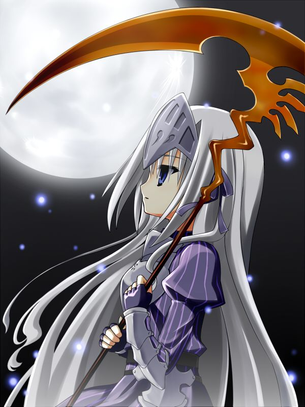

|  | BIOGRAFIA |
|---|---|
|
Eucliwood Hellscythe, conhecida carinhosamente como "Eu", é uma necromante todo-poderosa. Apesar de sua aparência frágil de uma garota pequena sempre vestida com armadura de placas prateadas completa, ela possui poderes devastadores que transcendem a compreensão humana. Suas palavras carregam tanto poder que qualquer coisa que ela diga se torna realidade instantaneamente, forçando-a a permanecer em silêncio absoluto e se comunicar apenas através de cadernos. Exilada do submundo após um incidente traumático envolvendo seu poder descontrolado, Eu vaga pelo mundo com uma expressão eternamente neutra e impassível. Por baixo de sua fachada silenciosa, existe uma pessoa gentil, solitária e profundamente traumatizada pelo peso de seus poderes incontroláveis. Ela desenvolve um afeto genuíno por Ayumu Aikawa depois que acidentalmente o transforma em zumbi.
| |
| ARMAS | |
|
Mystletainn:Foice gigantesca mística que pode ser invocada à vontade, capaz de cortar através de dimensões e espíritos.
Armadura Mística:Traje de placas completo encantado que sela parcialmente seus poderes. | |
| Habilidades | |
|
Kotodama Absoluto: Qualquer palavra falada por ela se torna realidade instantaneamente - pode matar com um sussurro, curar com uma frase, ou alterar a própria realidade. Necromancia Suprema: Controle total sobre vida e morte, capaz de criar zumbis imortais com habilidades especiais ou ressuscitar os mortos. Imaginação Materializada: Seus pensamentos e fantasias podem se manifestar involuntariamente no mundo real quando suas emoções estão descontroladas. |